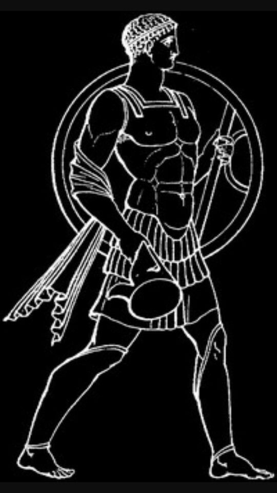

Marte sempre despertou a atenção da humanidade. Desde a Antiguidade, esse ponto avermelhado no céu chamou a atenção de diversas civilizações, muito antes da invenção dos telescópios. Astrônomos da Mesopotâmia, do Egito e da Grécia já observavam sua movimentação incomum no firmamento, classificando-o como um "planeta errante".
Embora Marte seja visível a olho nu, o avanço da astronomia permitiu compreensões mais precisas. No século XVII, com o uso do telescópio, astrônomos como Galileo Galilei foram capazes de observar a superfície marciana com mais detalhes. A partir daí, Marte se tornou um dos objetos celestes mais estudados.
Diversas culturas atribuíram significados simbólicos a Marte. Os romanos associaram o planeta ao deus da guerra — Marte — devido à sua coloração avermelhada, que lembrava sangue. Na mitologia grega, ele era conhecido como Ares. Para os babilônios, o planeta estava ligado à destruição e à força. Ao longo dos séculos, essas crenças moldaram o imaginário popular, criando lendas sobre vida marciana e até civilizações alienígenas avançadas.
O nome "Marte" vem da mitologia romana. O planeta foi batizado em homenagem ao deus da guerra, como mencionado, por causa de sua cor vermelha intensa — resultante da grande quantidade de óxido de ferro presente em sua superfície. Essa aparência peculiar o diferenciava dos demais astros no céu noturno.
Marte é o quarto planeta do Sistema Solar, menor que a Terra, mas com diversas semelhanças, como a presença de calotas polares, estações do ano e indícios de antigos leitos de rios. A atmosfera é fina e composta principalmente por dióxido de carbono. Sua paisagem é marcada por vulcões gigantes, como o Monte Olimpo (o maior do Sistema Solar), e extensos cânions, como Valles Marineris. Apesar das condições hostis, é um dos principais candidatos a abrigar formas de vida no passado — ou, quem sabe, no futuro.
Próxima página: Geologia